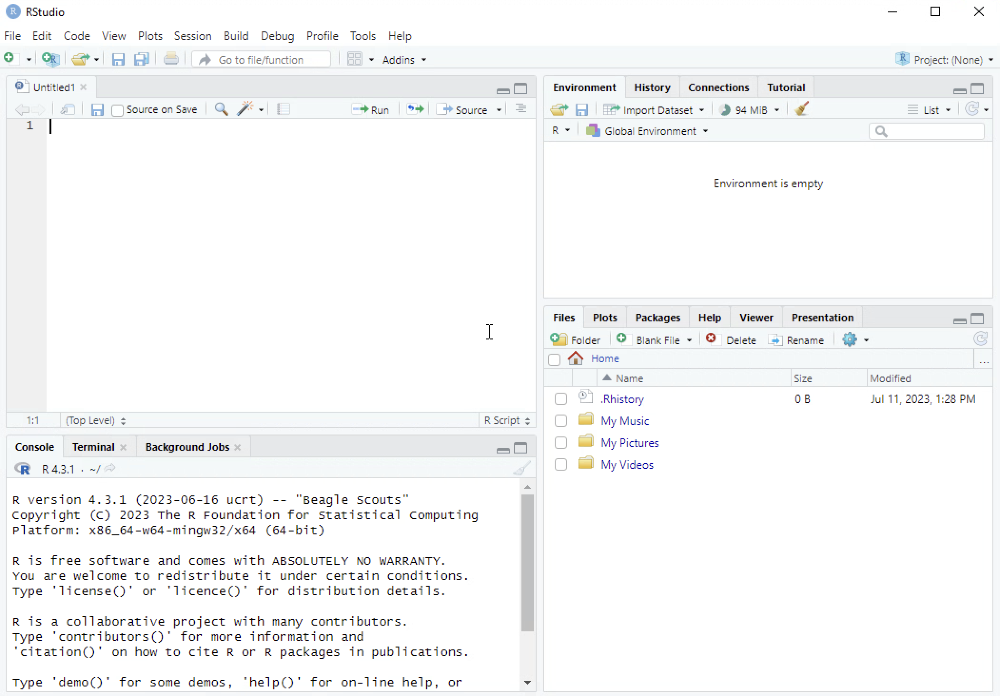

library(dplyr)
Attaching package: 'dplyr'The following objects are masked from 'package:stats':
filter, lagThe following objects are masked from 'package:base':
intersect, setdiff, setequal, unionRStudio is an Integrated Development Environment (IDE) for use with the R programming language for statistics and data analysis. When you first open RStudio you will see a view like that shown in Figure 1. There are three distinct ‘panes’ (as in windowpane). There is a fourth pane initially hidden from view. To make that visible click on the icon as highlighted.

You should then see a view like that shown here:

XXXX
There are many functions that come in the box with R, but other packages and functions have been developed by users to add functionality to R, or to make using it more accessible. We will be using some user-written functions to aid with our data analysis. If you are using your own computer or laptop, you install a package once only, but you need to load it each time you start a new session working with RStudio. If you are using a university computer, either on campus or via a virtual desktop, you install and load packages each time you log on and launch RStudio. In either case, this is not difficult to do and it is typically a step we get out of the way before doing anything else.
In this code snippet we install the package dplyr
install.packages("dplyr", dependencies = TRUE)
Once installed, we then load it using the library() function. Note that the name of the package is placed in quotes "" when installing the package, but is not placed in quotes when loading it. To install and load other packages as required simply change the name of the package in the code below.
library(dplyr)
Attaching package: 'dplyr'The following objects are masked from 'package:stats':
filter, lagThe following objects are masked from 'package:base':
intersect, setdiff, setequal, unionWe will be analyzing data from the Crime Survey of England and Wales (CSEW), which is an annual victim survey providing national statistics about crime rates, and collects a wide range of other information relating to crime and the criminal justice system including the police. We will be using an open access unrestricted version of the CSEW from 2013-14. Detailed information about the data we are using can be found here. You should regularly consult this documentation as you use the data.
You can read (import) many types of data into RStudio. Data is saved in different file formats, and each format has a distinct file extension. A common file type is a comma separated variable file (e.g., ‘file.csv’) which is a basic type of excel file. You can also read in standard excel files (e.g., ‘file.xlsx’), and files from other statistical packages such as SPSS (e.g., ‘file.sav’) and Stata (e.g., ‘file.dta’). In this module we will be working mostly with .csv files and .sav (SPSS) files.
The code below reads the csv file ‘csew.csv’ into RStudio.
csew <- read.csv("../Data/csew.csv", stringsAsFactors = TRUE)The snippet above has different components. We will consider each of these in turn:
csew we begin by giving the dataset a name. We can use any name, but pick something that will be easy to type and give you enough information to know what the name refers to (Note: you will likely have a number of data sets).
<- this is called an assignment operator. Think of this as similar to an = sign.
read.csv() This is the command to read the csv file. Note that we have included code within the brackets.
There are two parts to the code within the brackets, separated by a ,:
"../Data/KM/csew.csv" This is the name of the file (including filepath information), and this is placed in quotes always.
stringsAsFactors = TRUE This ensures that any values in the data that are strings (text) will be treated as factor (categorical) variables. We could set this to be FALSE and then set the type of each variable individually where appropriate.
You should see the data set loaded into the Environment pane in RStudio, with information given about the number of observations (obs.) and the number of variables.

When the data has been imported into RStudio there are a number of functions available to explore it. The following code snippet shows some functions we can use to explore the data.
View(csew)
names(csew) [1] "rowlabel" "split" "sex" "yrsarea" "resyrago" "work2"
[7] "tenure1" "livharm1" "agegrp7" "ethgrp2a" "educat3" "rural2"
[13] "edeprivex" "wdeprivex" "IndivWgtx" "cause2m" "walkdark" "walkday"
[19] "homealon" "wburgl" "wmugged" "wcarstol" "wfromcar" "wraped"
[25] "wattack" "wraceatt" "worryx" "bcsvictim" "rubbcomm" "vandcomm"
[31] "poorhou" "antisocx" The View() function simply opens a Viewer window that shows the data (much like looking at an excel spreadsheet). The names() function produces a list of the column (variable) names and this is particularly useful. In both cases, you simply place the name of the data set within the brackets.